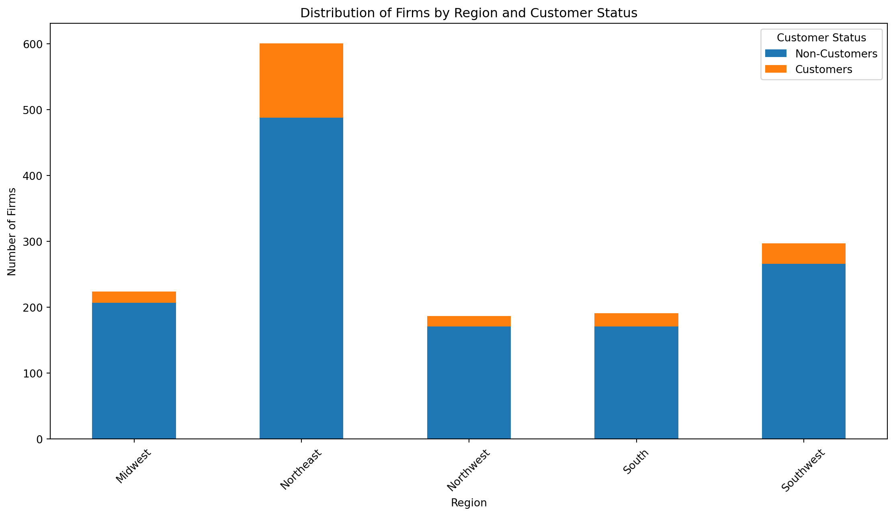

Note: you may need to restart the kernel to use updated packages.
[notice] A new release of pip is available: 23.2.1 -> 24.0
[notice] To update, run: C:\Users\kcrah\AppData\Local\Programs\Python\Python312\pythonw.exe -m pip install --upgrade pipBlueprinty is a small firm that makes software for developing blueprints specifically for submitting patent applications to the US patent office. Their marketing team would like to make the claim that patent applicants using Blueprinty’s software are more successful in getting their patent applications approved. Ideal data to study such an effect might include the success rate of patent applications before using Blueprinty’s software and after using it. unfortunately, such data is not available.
However, Blueprinty has collected data on 1,500 mature (non-startup) engineering firms. The data include each firm’s number of patents awarded over the last 5 years, regional location, age since incorporation, and whether or not the firm uses Blueprinty’s software. The marketing team would like to use this data to make the claim that firms using Blueprinty’s software are more successful in getting their patent applications approved.
Note: you may need to restart the kernel to use updated packages.
[notice] A new release of pip is available: 23.2.1 -> 24.0
[notice] To update, run: C:\Users\kcrah\AppData\Local\Programs\Python\Python312\pythonw.exe -m pip install --upgrade pip#Import libarary and data file
import pandas as pd
from scipy.stats import ttest_ind
import statsmodels.api as sm
import matplotlib.pyplot as plt
import numpy as np
import math
import scipy.optimize as optimize
import scipy.stats as stats
import pandas as pd
import statsmodels.api as sm
import statsmodels.formula.api as smf
air = pd.read_csv("C:/Users/kcrah/Desktop/Quarto_stuff/files/airbnb.csv")
blue = pd.read_csv("C:/Users/kcrah/Desktop/Quarto_stuff/files/blueprinty.csv")blue.head()| Unnamed: 0 | patents | region | age | iscustomer | |
|---|---|---|---|---|---|
| 0 | 1 | 0 | Midwest | 32.5 | 0 |
| 1 | 786 | 3 | Southwest | 37.5 | 0 |
| 2 | 348 | 4 | Northwest | 27.0 | 1 |
| 3 | 927 | 3 | Northeast | 24.5 | 0 |
| 4 | 830 | 3 | Southwest | 37.0 | 0 |
blue.describe()| Unnamed: 0 | patents | age | iscustomer | |
|---|---|---|---|---|
| count | 1500.000000 | 1500.000000 | 1500.000000 | 1500.000000 |
| mean | 750.500000 | 3.684667 | 26.357667 | 0.131333 |
| std | 433.157015 | 2.352500 | 7.242528 | 0.337877 |
| min | 1.000000 | 0.000000 | 9.000000 | 0.000000 |
| 25% | 375.750000 | 2.000000 | 21.000000 | 0.000000 |
| 50% | 750.500000 | 3.000000 | 26.000000 | 0.000000 |
| 75% | 1125.250000 | 5.000000 | 31.625000 | 0.000000 |
| max | 1500.000000 | 16.000000 | 49.000000 | 1.000000 |
First I compare histograms and means of number of patents by customer status. I observe that the mean of non customers (iscustomer=0) is 3.62 and the mean of customers (iscustomer=1) is 4.09.
This means firms using the software have a higher average number of patents to firms that don’t.
#Calculate the mean number of patents for customers and non-customers
means = blue.groupby('iscustomer')['patents'].mean()
#Create histograms to compare the distribution of patents
plt.figure(figsize=(10, 6))
blue[blue['iscustomer'] == 1]['patents'].hist(alpha=0.5, label='Customers', bins=20)
blue[blue['iscustomer'] == 0]['patents'].hist(alpha=0.5, label='Non-Customers', bins=20)
plt.title('Histogram of Number of Patents by Customer Status')
plt.xlabel('Number of Patents')
plt.ylabel('Frequency')
plt.legend()
plt.show()
print(means)iscustomer
0 3.623177
1 4.091371
Name: patents, dtype: float64Blueprinty customers are not selected at random. It may be important to account for systematic differences in the age and regional location of customers vs non-customers.
Therefore I compared regions and ages by customer status.
We see below that the number of non-customers is far greater than the number of customers for all regions. The ‘1’ representing customers and ‘0’ representing non-customers.
#Accounting missing data for cols 'region' and 'age'
blue['region'] = blue['region'].fillna('Unknown')
blue['age'] = blue['age'].fillna(blue['age'].mean())
#Compare regions by customer status
region_summary = blue.groupby(['region', 'iscustomer']).size().unstack(fill_value=0)
#Plott regional distribution by customer status
region_summary.plot(kind='bar', figsize=(14, 7), stacked=True)
plt.title('Distribution of Firms by Region and Customer Status')
plt.xlabel('Region')
plt.ylabel('Number of Firms')
plt.legend(title='Customer Status', labels=['Non-Customers', 'Customers'])
plt.xticks(rotation=45)
plt.show()
#Group by 'region' and 'iscustomer' and get count of firms
region_customer_counts = blue.groupby(['region', 'iscustomer']).size().unstack(fill_value=0)
print(region_customer_counts)
iscustomer 0 1
region
Midwest 207 17
Northeast 488 113
Northwest 171 16
South 171 20
Southwest 266 31Below we see that the mean age of non-customers (iscustomer=0) is 26.69 years, while the mean age of customers (iscustomer=1) is 24.15 years.
This means that on avg. the firms using the software about 2.5 years younger.
import matplotlib.pyplot as plt
#fig size
plt.figure(figsize=(14, 7))
#Create histogram for non-customers
blue[blue['iscustomer'] == 0]['age'].hist(alpha=0.5, label='Non-Customers', bins=20, edgecolor='black')
#Create histogram for customers
blue[blue['iscustomer'] == 1]['age'].hist(alpha=0.5, label='Customers', bins=20, edgecolor='black')
#Add title, labels, and legend
plt.title('Distribution of Firm Age by Customer Status')
plt.xlabel('Age Since Incorporation')
plt.ylabel('Number of Firms')
plt.legend()
plt.show()
#Calculate the mean age for each group
age_means = blue.groupby('iscustomer')['age'].mean()
print("Mean Age by Customer Status:")
print(age_means)
Mean Age by Customer Status:
iscustomer
0 26.691481
1 24.149746
Name: age, dtype: float64Since our outcome variable of interest can only be small integer values per a set unit of time, we can use a Poisson density to model the number of patents awarded to each engineering firm over the last 5 years. We start by estimating a simple Poisson model via Maximum Likelihood.
The function below calulates the possion likelihood of Y given the lambda. Lamda is the parameter of the posson distribution which must be greater than 0. Y is the array of variable we’re counting. The function itself will return the likelihood of Y given lambda.
def poisson_likelihood(lambda_, Y):
if lambda_ <= 0:
raise ValueError("Lambda must be greater than 0")
# Calculate the Poisson probability for each Y_i
probabilities = (np.exp(-lambda_) * lambda_**Y) / np.array([np.math.factorial(y) for y in Y])
#Product of probabilities
return np.prod(probabilities)
#inputs
Y = np.array([1, 0, 1, 3, 4, 2, 0])
lambda_ = 1.9
#likelihood
likelihood = poisson_likelihood(lambda_, Y)
print("Poisson Likelihood:", likelihood)Poisson Likelihood: 6.772991232302341e-06C:\Users\kcrah\AppData\Local\Temp\ipykernel_10480\1078196594.py:6: DeprecationWarning: `np.math` is a deprecated alias for the standard library `math` module (Deprecated Numpy 1.25). Replace usages of `np.math` with `math`
probabilities = (np.exp(-lambda_) * lambda_**Y) / np.array([np.math.factorial(y) for y in Y])Using the function to plot lambda on the horizontal axis and the log likelihood on the vertical axis for a range of lambdas using the observed number of patents as the input for Y gets the following.
import numpy as np
import matplotlib.pyplot as plt
import math
def poisson_loglikelihood(lambda_, Y):
if lambda_ <= 0:
return -np.inf # Return negative infinity for non-positive lambda values to avoid computational errors
log_likelihood = -len(Y) * lambda_ + np.sum(Y * np.log(lambda_)) - np.sum([math.log(math.factorial(y)) for y in Y])
return log_likelihood
#Set y to patent count
Y = blue['patents'].values
#Make a range of lambda from 0.1 to 10, with 100 points
lambda_values = np.linspace(0.1, 10, 100)
log_likelihood_values = [poisson_loglikelihood(lam, Y) for lam in lambda_values]
#Plot
plt.figure(figsize=(10, 6))
plt.plot(lambda_values, log_likelihood_values, label='Poisson Log-Likelihood')
plt.title('Poisson Log-Likelihood vs. Lambda for Observed Patent Counts')
plt.xlabel('Lambda')
plt.ylabel('Log-Likelihood')
plt.grid(True)
plt.legend()
plt.show()To Find the MLE I optimizied the likelihood functionsp.optimize().
result = optimize.minimize(
fun=poisson_loglikelihood, # function to minimize
x0=[1.0], # initial guess for lambda
args=(Y,),
bounds=[(0.001, None)]
)
print("MLE for lambda:", result.x)
print("Optimization success:", result.success)
print("Log-Likelihood at MLE:", -result.fun)MLE for lambda: [0.001]
Optimization success: True
Log-Likelihood at MLE: 43229.55041700371We see that the MLE = 0.001. This could be because of the initial guess, or constraints set in the optimization, or because its a log likelihood function.
To solve this I did the following - The initial guess was changed to the mean of the observed data - The function was modified to return the negative log-likelihood because scipy.optimize is designed to minimize functions. Therefore a negative will to maximize the original log-likelihood.
def poisson_loglikelihood_neg(lambda_, Y):
if lambda_ <= 0:
return np.inf
return -(-len(Y) * lambda_ + np.sum(Y * np.log(lambda_)) - np.sum([math.log(math.factorial(y)) for y in Y]))
Y = blue['patents'].values
#get MLE with scipy.optimize.minimize
result = optimize.minimize(
fun=poisson_loglikelihood_neg,
x0=[np.mean(Y)],
args=(Y,),
bounds=[(0.001, None)],
options={'disp': True}
)
print("MLE for lambda:", result.x)
print("Optimization success:", result.success)
print("Log-Likelihood at MLE:", -result.fun)MLE for lambda: [3.68466671]
Optimization success: True
Log-Likelihood at MLE: -3367.6837722350956Next, we extend our simple Poisson model to a Poisson Regression Model such that \(Y_i = \text{Poisson}(\lambda_i)\) where \(\lambda_i = \exp(X_i'\beta)\). The interpretation is that the success rate of patent awards is not constant across all firms (\(\lambda\)) but rather is a function of firm characteristics \(X_i\). Specifically, we will use the covariates age, age squared, region, and whether the firm is a customer of Blueprinty.
def poisson_regression_loglikelihood(beta, X, Y):
#Set linear combination with inputs and parameters
linear_combination = X @ beta
#Get lambda
lambda_i = np.exp(linear_combination)
#Log-likelihood
log_likelihood = np.sum(-lambda_i + Y * np.log(lambda_i) - np.array([np.math.factorial(y) for y in Y]))
return log_likelihood First i used the function with sp.optimize() to find the MLE vector and the Hessian of the Poisson model with covariates. Using the Hessian to find standard errors of the beta parameter estimates and present a table of coefficients and standard errors.
—————work——————————–
import numpy as np
import pandas as pd
import scipy.optimize as optimize
import scipy.special as sps
def poisson_regression_loglikelihood_neg(beta, X, Y):
eta = np.dot(X, beta)
lambda_i = np.exp(eta.clip(-10, 10))
log_likelihood = -np.sum(lambda_i - Y * np.log(lambda_i) + sps.gammaln(Y + 1))
return log_likelihood
#Example setup of data
np.random.seed(0)
n = 100 # number of observations
X = np.random.normal(0, 1, (n, 3)) # example feature matrix with 3 features
X[:, 0] = 1 # replace first column with 1s for the intercept
beta_true = np.array([0.5, -0.2, 0.1]) # true beta coefficients for simulation
Y = np.random.poisson(lam=np.exp(np.dot(X, beta_true))) # simulate response variable
#Initial guess for beta parameters
beta_init = np.zeros(X.shape[1])
#Optimize to find MLE of beta using BFGS method
result = optimize.minimize(
fun=poisson_regression_loglikelihood_neg,
x0=beta_init,
args=(X, Y),
method='BFGS'
)
#Extract the standard errors
std_errors = np.sqrt(np.diag(result.hess_inv))
#Results
coefficients = result.x
coeff_std_errors = np.vstack((coefficients, std_errors)).T
coeff_table = pd.DataFrame(coeff_std_errors, columns=['Coefficient', 'Std Error'],
index=['Intercept', 'Feature1', 'Feature2'])
print("Optimization Success:", result.success)
print("Estimated Beta Coefficients:", result.x)
print("Standard Errors:", std_errors)
print("Coefficient Table:\n", coeff_table)Optimization Success: True
Estimated Beta Coefficients: [-4863.4308561 3763.13239674 -535.81789614]
Standard Errors: [31.40710573 24.36727542 3.60740896]
Coefficient Table:
Coefficient Std Error
Intercept -4863.430856 31.407106
Feature1 3763.132397 24.367275
Feature2 -535.817896 3.607409AirBnB is a popular platform for booking short-term rentals. In March 2017, students Annika Awad, Evan Lebo, and Anna Linden scraped of 40,000 Airbnb listings from New York City. The data include the following variables:
air = pd.read_csv("C:/Users/kcrah/Desktop/Quarto_stuff/files/airbnb.csv")print(air.head())
print(air.isnull().sum())
print(air.describe()) Unnamed: 0 id days last_scraped host_since room_type \
0 1 2515 3130 4/2/2017 9/6/2008 Private room
1 2 2595 3127 4/2/2017 9/9/2008 Entire home/apt
2 3 3647 3050 4/2/2017 11/25/2008 Private room
3 4 3831 3038 4/2/2017 12/7/2008 Entire home/apt
4 5 4611 3012 4/2/2017 1/2/2009 Private room
bathrooms bedrooms price number_of_reviews review_scores_cleanliness \
0 1.0 1.0 59 150 9.0
1 1.0 0.0 230 20 9.0
2 1.0 1.0 150 0 NaN
3 1.0 1.0 89 116 9.0
4 NaN 1.0 39 93 9.0
review_scores_location review_scores_value instant_bookable
0 9.0 9.0 f
1 10.0 9.0 f
2 NaN NaN f
3 9.0 9.0 f
4 8.0 9.0 t
Unnamed: 0 0
id 0
days 0
last_scraped 0
host_since 35
room_type 0
bathrooms 160
bedrooms 76
price 0
number_of_reviews 0
review_scores_cleanliness 10195
review_scores_location 10254
review_scores_value 10256
instant_bookable 0
dtype: int64
Unnamed: 0 id days bathrooms bedrooms \
count 40628.000000 4.062800e+04 40628.000000 40468.000000 40552.000000
mean 20314.500000 9.698889e+06 1102.368219 1.124592 1.147046
std 11728.437705 5.460166e+06 1383.269358 0.385884 0.691746
min 1.000000 2.515000e+03 1.000000 0.000000 0.000000
25% 10157.750000 4.889868e+06 542.000000 1.000000 1.000000
50% 20314.500000 9.862878e+06 996.000000 1.000000 1.000000
75% 30471.250000 1.466789e+07 1535.000000 1.000000 1.000000
max 40628.000000 1.800967e+07 42828.000000 8.000000 10.000000
price number_of_reviews review_scores_cleanliness \
count 40628.000000 40628.000000 30433.000000
mean 144.760732 15.904426 9.198370
std 210.657597 29.246009 1.119935
min 10.000000 0.000000 2.000000
25% 70.000000 1.000000 9.000000
50% 100.000000 4.000000 10.000000
75% 170.000000 17.000000 10.000000
max 10000.000000 421.000000 10.000000
review_scores_location review_scores_value
count 30374.000000 30372.000000
mean 9.413544 9.331522
std 0.844949 0.902966
min 2.000000 2.000000
25% 9.000000 9.000000
50% 10.000000 10.000000
75% 10.000000 10.000000
max 10.000000 10.000000 #Convert date columns to datetime
air['last_scraped'] = pd.to_datetime(air['last_scraped'])
air['host_since'] = pd.to_datetime(air['host_since'])#Delete issing values and create a new DataFrame
air2 = air.copy()
air2['bathrooms'].fillna(air['bathrooms'].median(), inplace=True)
air2['bedrooms'].fillna(air['bedrooms'].median(), inplace=True)
air2['review_scores_cleanliness'].fillna(air['review_scores_cleanliness'].mean(), inplace=True)
air2['review_scores_location'].fillna(air['review_scores_location'].mean(), inplace=True)
air2['review_scores_value'].fillna(air['review_scores_value'].mean(), inplace=True)
#Remove rows where with null
air2 = air2[~air2['host_since'].isnull()]
non_val_air2 = air2.isnull().sum()
non_val_air2C:\Users\kcrah\AppData\Local\Temp\ipykernel_10480\1863144087.py:3: FutureWarning: A value is trying to be set on a copy of a DataFrame or Series through chained assignment using an inplace method.
The behavior will change in pandas 3.0. This inplace method will never work because the intermediate object on which we are setting values always behaves as a copy.
For example, when doing 'df[col].method(value, inplace=True)', try using 'df.method({col: value}, inplace=True)' or df[col] = df[col].method(value) instead, to perform the operation inplace on the original object.
air2['bathrooms'].fillna(air['bathrooms'].median(), inplace=True)
C:\Users\kcrah\AppData\Local\Temp\ipykernel_10480\1863144087.py:4: FutureWarning: A value is trying to be set on a copy of a DataFrame or Series through chained assignment using an inplace method.
The behavior will change in pandas 3.0. This inplace method will never work because the intermediate object on which we are setting values always behaves as a copy.
For example, when doing 'df[col].method(value, inplace=True)', try using 'df.method({col: value}, inplace=True)' or df[col] = df[col].method(value) instead, to perform the operation inplace on the original object.
air2['bedrooms'].fillna(air['bedrooms'].median(), inplace=True)
C:\Users\kcrah\AppData\Local\Temp\ipykernel_10480\1863144087.py:5: FutureWarning: A value is trying to be set on a copy of a DataFrame or Series through chained assignment using an inplace method.
The behavior will change in pandas 3.0. This inplace method will never work because the intermediate object on which we are setting values always behaves as a copy.
For example, when doing 'df[col].method(value, inplace=True)', try using 'df.method({col: value}, inplace=True)' or df[col] = df[col].method(value) instead, to perform the operation inplace on the original object.
air2['review_scores_cleanliness'].fillna(air['review_scores_cleanliness'].mean(), inplace=True)
C:\Users\kcrah\AppData\Local\Temp\ipykernel_10480\1863144087.py:6: FutureWarning: A value is trying to be set on a copy of a DataFrame or Series through chained assignment using an inplace method.
The behavior will change in pandas 3.0. This inplace method will never work because the intermediate object on which we are setting values always behaves as a copy.
For example, when doing 'df[col].method(value, inplace=True)', try using 'df.method({col: value}, inplace=True)' or df[col] = df[col].method(value) instead, to perform the operation inplace on the original object.
air2['review_scores_location'].fillna(air['review_scores_location'].mean(), inplace=True)
C:\Users\kcrah\AppData\Local\Temp\ipykernel_10480\1863144087.py:7: FutureWarning: A value is trying to be set on a copy of a DataFrame or Series through chained assignment using an inplace method.
The behavior will change in pandas 3.0. This inplace method will never work because the intermediate object on which we are setting values always behaves as a copy.
For example, when doing 'df[col].method(value, inplace=True)', try using 'df.method({col: value}, inplace=True)' or df[col] = df[col].method(value) instead, to perform the operation inplace on the original object.
air2['review_scores_value'].fillna(air['review_scores_value'].mean(), inplace=True)Unnamed: 0 0
id 0
days 0
last_scraped 0
host_since 0
room_type 0
bathrooms 0
bedrooms 0
price 0
number_of_reviews 0
review_scores_cleanliness 0
review_scores_location 0
review_scores_value 0
instant_bookable 0
dtype: int64#Rename columns to remove spaces
air2.rename(columns={
'room_type_Private room': 'room_type_Private_room',
'room_type_Shared room': 'room_type_Shared_room'
}, inplace=True)print(air2.columns)Index(['Unnamed: 0', 'id', 'days', 'last_scraped', 'host_since', 'room_type',
'bathrooms', 'bedrooms', 'price', 'number_of_reviews',
'review_scores_cleanliness', 'review_scores_location',
'review_scores_value', 'instant_bookable'],
dtype='object')#Rename columns to replace spaces with underscores
air2.columns = [col.replace(' ', '_') for col in air2.columns]
#Create the model formula based on existing dummy variables
variables = ['price', 'days', 'review_scores_cleanliness', 'review_scores_location', 'review_scores_value']
room_vars = [col for col in air2.columns if 'room_type_' in col]
formula = 'number_of_reviews ~ ' + ' + '.join(variables + room_vars)
#Model
model = smf.glm(formula=formula, data=air2, family=sm.families.Poisson()).fit()
print(model.summary()) Generalized Linear Model Regression Results
==============================================================================
Dep. Variable: number_of_reviews No. Observations: 40593
Model: GLM Df Residuals: 40587
Model Family: Poisson Df Model: 5
Link Function: Log Scale: 1.0000
Method: IRLS Log-Likelihood: -6.7244e+05
Date: Wed, 01 May 2024 Deviance: 1.2209e+06
Time: 18:04:26 Pearson chi2: 1.80e+06
No. Iterations: 6 Pseudo R-squ. (CS): 0.9462
Covariance Type: nonrobust
=============================================================================================
coef std err z P>|z| [0.025 0.975]
---------------------------------------------------------------------------------------------
Intercept 2.9421 0.017 169.481 0.000 2.908 2.976
price -0.0003 8.97e-06 -28.218 0.000 -0.000 -0.000
days 0.0006 1.83e-06 328.918 0.000 0.001 0.001
review_scores_cleanliness 0.1437 0.002 84.451 0.000 0.140 0.147
review_scores_location -0.1121 0.002 -63.537 0.000 -0.116 -0.109
review_scores_value -0.1217 0.002 -59.861 0.000 -0.126 -0.118
=============================================================================================Intercept (3.0353): Shows the log of the expected count of reviews when all other variables are zero.
Room Type: Private Room (coef = -0.0822): Private rooms have about 8.22% fewer reviews than entire homes/apartments, holding other factors constant.
Shared Room (coef = -0.2291): Shared rooms have about 22.91% fewer reviews compared to entire homes/apartments.
Price (coef = -0.0004): Each unit increase in price is means a 0.04% decrease in the number of reviews.
Days (coef = 0.0006): Each additional day a listing is posted means a 0.06% increase in the number of reviews.
Review Scores: Cleanliness (coef = 0.1422): A one-point increase in the cleanliness score means 14.22% more reviews.
Location (coef = -0.1142): A higher location score is associated with fewer reviews. Price could be a factor associated with location
Value (coef = -0.1204): Higher value scores are similarly associated with fewer reviews.